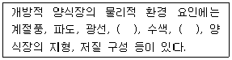

수산양식기사 (2017-03-05 기출문제)
1과목: 어류양식학
1. 가공 형태에 따른 사료의 종류가 아닌 것은?
- 건조사료
- 가루사료
- 크럼블사료
- 미립자사료
(정답률: 75%)

2. 다음 어류 중 구중(口中)화 하는 어류는?
- 조피볼락
- 틸라피아
- 초어
- 감성돔
(정답률: 80%)
3. 넙치 부화 자어를 20~50m수조에서 사육할 때 적당한 수용밀도(개체/1000L)는?
- 1000
- 5000
- 20000
- 40000
(정답률: 65%)
4. 선발육종(Selective breeding)에서 가장 많이, 쉽게 취급하는 형질은?
- 관상성
- 내병성
- 성장력
- 산란력
(정답률: 84%)
5. 틸라피아의 생태에 관한 사항으로 틀린 것은?
- 우리나라 남부의 경우 야외 못에서는 여름철 3~4개월 정도밖에 사육할 수 없다.
- 주로 식물식성이며, 광범위한 염분 농도에 견디는 종류들이 있다.
- 저산소 농도에 강해 고밀도로 양식할 수 있다.
- 사육밀도가 낮으면 성장은 빠르나 번식은 억제된다.
(정답률: 84%)
6. 어류에서 뇌하수체를 추출한 후 보관하는 방법으로 맞는 것은?
- 증류수에 넣어 보관한다.
- 아세톤에 건조시켜 보관한다.
- 포르말린에 고정시켜 보관한다.
- 링거액(생리식염수)에 보관한다.
(정답률: 75%)
7. 넙치알의 특성은?
- 분리침성란
- 분리부성란
- 점착부성란
- 점착침성란
(정답률: 88%)
8. 무지개송어를 양식할 수 있는 용수의 최저 용존산소량은?
- 5mg/L
- 7mg/L
- 11mg/L
- 15mg/L
(정답률: 77%)
9. 자주복의 부화 후 공식 현상이 생기기 시작하는 크기는?
- 부화 직후의 전장 2.6~2.9mm
- 전장 5mm 전후
- 치아가 발달한 전장 50mm
- 먹이 활동이 활발한 전장 100mm
(정답률: 73%)
10. 참돔에 대한 설명으로 맞는 것은?
- 산란기의 성숙한 암컷은 머리가 둥글고 검은색을 띤다.
- 22℃에서의 부화시간은 84시간 정도이다.
- 알은 일반 해수에서 분리침성란이다.
- 부화 후 운동력과 시각이 발달하면 먹이를 선택적으로 먹는다.
(정답률: 76%)
11. 미꾸리의 생활 습성에 대한 설명으로 가장 거리가 먼 것은?
- 아가미 호흡과 창자호흡을 한다.
- 수심이 깊은 곳을 선호한다.
- 산란 후 항문 옆에 타원형의 흰 자국이 생긴다.
- 산란기는 5~8월 이다.
(정답률: 81%)
12. 조피볼락 종묘 생산 시, 출산 후 약 10일간 공급하는 로티퍼의 밀도는?
- 2~3개체
- 20~30개체
- 200~300개체
- 2,000~3,000개체
(정답률: 57%)
13. 실뱀장어 사육에서 인공 배합사료 사용의 장점은?
- 먹이에 의한 오염이 적어 수질 관리가 용이하다.
- 먹이에 의한 에드워드병의 감염이 없다.
- 일반적으로 초기 성장이 우수하다.
- 일반적으로 실지렁이보다 기호성이 좋다.
(정답률: 60%)
14. 은어 종묘 생산 시 초기사육의 적수온은?
- 5~10℃
- 10~15℃
- 15~20℃
- 25~30℃
(정답률: 72%)
15. 사료 중 지방질의 변질 방지를 위해 첨가하는 성분은?
- 탄수화물
- 단백질
- 비타민C
- 비타민E
(정답률: 83%)
16. 사료 내에 부족할 경우 빛 공포증, 백내장, 피부병 및 지느러미 출혈 증상이 나타나는 영양소는?
- 비타민B2
- 비타민B12
- 비타민C
- 비타민A
(정답률: 54%)
17. 어류의 성숙 촉진 또는 산란 유발과 가장 거리가 먼 것은?
- 간출(노출)자극
- 수온 자극
- 광주기 조절 자극
- HCG 주사
(정답률: 72%)
18. 조피볼락의 친어 관리 및 생태에 관한 내용으로 틀린 것은?
- 친어 대상은 자연에서 포획한 것 또는 종묘 생산 하여 양식된 것으로 한다.
- 교미 시기의 사육 수온은 10~13℃로 유지한다.
- 출산 시기의 사육 수온은 13~15℃로 유지한다.
- 친어의 교미 후 즉시 체내에서 미성숙란의 수정이 이루어진다.
(정답률: 82%)
19. 일반적으로 사용되고 있는 잉어알 부화 병의 크기는?
- 지름 10~15cm, 높이 50~60cm
- 지름 20~30cm, 높이 30~40cm
- 지름 35~40cm, 높이 20~30cm
- 지름 50~60cm, 높이 10~15cm
(정답률: 66%)
20. 난황의 크기가 크고 부화 자어의 입이 커서 부화된 자어에게 동물성 플랑크톤을 먹이로 공급하지 않아도 되는 어종은?
- 잉어
- 붕어
- 송어
- 은어
(정답률: 65%)
2과목: 무척추동물양식학
21. 성게류 부화유생의 먹이로 틀린 것은?
- Clamydomonas sp.
- Chaetoceros sp.
- Nitzschia sp.
- Calanus sp.
(정답률: 65%)
22. 후기 채묘한 굴을 단련상에 옮겨 단련시키는 주된 목적은?
- 성장 억제
- 공중활력 증강
- 원반당 부착밀도 조절
- 해적생물에 의한 피해 방지
(정답률: 66%)
23. 우리나라에서 대하나 흰다리새우를 양성하는 일반적인 방법은?
- 제방식(축제식)
- 나뭇가지식
- 채롱식
- 바닥식
(정답률: 83%)
24. 채묘된 진주담치 치패를 수심이 다소 깊은 수층으로 옮겨 두었다가 일정 시간 경과 후 다시 양성 수층으로 옮겨 양성하는 주목적은?
- 수확 시의 크기를 균일하게 하기 위하여
- 성장을 촉진하기 위하여
- 해적생무릐 부착을 방지하기 위하여
- 대량 폐사를 방지하기 위하여
(정답률: 47%)
25. 진주조개가 동면으로 들어가는 수온은?
- 8℃
- 10℃
- 13℃
- 15℃
(정답률: 54%)
26. 우리나라 성게류 중 가장 깊은 바다에서 사는 종은?
- 북쪽말똥성게
- 분홍성게
- 보라성게
- 말똥성게
(정답률: 73%)
27. 라마르크 대합과 비교하여 대합의 성태적 특징을 가장 잘 나타낸 것은?
- 외투막돌기는 가늘게 분기하여 복잡하다.
- 패각의 무늬는 성장한 후에는 변화가 없다.
- 입수관 구연부에 있는 촉수의 구조가 단조롭다.
- 패각의 두께가 두꺼운 편이다.
(정답률: 68%)
28. 인공 종묘 생산 시 부유유생 시기에 먹이생물을 공급하지 않아도 되는 종은?
- 성게
- 해삼
- 피조개
- 멍게(우렁쉥이)
(정답률: 80%)
29. 산란 시기에 성숙한 암컷만으로 인공 종묘 생산이 가능한 양식생물은?
- 전복
- 참굴
- 보리새우
- 진주조개
(정답률: 69%)
30. 참가리비 바닥 양식장의 지표종이 아닌 것은?
- 아기군부
- 옆새우류
- 대형 혹히드라충류
- 개우렁쉥이류
(정답률: 62%)
31. 키조개의 서식 환경에 대한 설명으로 옳은 것은?
- 서식 수심은 간조선 아래의 지반이 비교적 낮은 곳
- 저질은 모래질이 50~80% 되는 곳
- 해수 비중은 1.0200 이하인 곳
- 저질 중에 족사로 부착하여 수평으로 몸을 지지할 수 있는 곳
(정답률: 62%)
32. 꽃게의 성장 과정에서 저서생활을 시작하는 시기는?
- 메갈로파기(3mm)
- 5기 치해(1~2cm)
- 11기 치해(9cm)
- 조에아기
(정답률: 73%)
33. 보리새우가 먹이를 먹기 시작하는 단계는?
- 노플리우스
- 조에아
- 메갈로파
- 미시스
(정답률: 82%)
34. 참전복을 이식할 경우, 환경 조건에 따른 성장에 관한 내용으로 옳은 것은?
- 환경 조건이 좋은 수역에서는 패각이 얇아진다.
- 환경 조건이 좋은 수역에서는 패각이 원형에 가깝다.
- 온대수역 내의 저위도 지역보다 고위도 지역에서 성장이 더 잘된다.
- 자갈밭과 암반지대에서의 전체 생산량은 차이가 없다.
(정답률: 61%)
35. 양식용 먹이생물의 조건으로 틀린 것은?
- 대량 배양이 가능해야 한다.
- 운동성이 활발한 것일수록 좋다.
- 칼로리의 함량이 높을수록 좋다.
- 쉽게 소화되어야 한다.
(정답률: 87%)
36. 연안 양식장의 부영양화 방지 대책을 세울 때 질소화합물과 함께 가장 문제가 되는 것은?
- 인
- 철
- 규쇼
- 비타민류
(정답률: 81%)
37. 우리나라에서 산업적으로 이용되는 이매패류 중 가장 대형인 것은?
- 참가리비
- 큰우럭
- 벗굴
- 키조개
(정답률: 85%)
38. 진주조개에 소핵을 수술했을 때 일반적인 양성기간은 약 몇 개월인가?
- 2~4개월
- 5~7개월
- 8~10개월
- 11~13개월
(정답률: 59%)
39. 참전복 수용양성에 적합하지 않은 장소는?
- 육수가 유입되어 영양염이 풍부한 곳
- 오염 해수의 영향을 받지 않는 깨끗한 곳
- 암초 지대로서 그 주변에 사니질이 없는 곳
- 지형이 천연적으로 재해를 방지할 수 있는 곳
(정답률: 74%)
40. 우럭의 종묘 생산 및 양성 과정에 대한 설명으로 틀린 것은?
- 유생의 부착성이 약해 천연에선 완류식 채묘가 가장 좋다.
- 간출 시간 1~2시간으로 얕은 곳이 치패관리장으로 가장 좋다.
- 방양에는 알맞은 종묘의 크기는 약 20mm이고, 밀도는 1m당 25~30개체이다.
- 양성장은 하구 부근으로 연한 개흙질이 많고 간출 시간이 2~4시간인 곳이 좋다.
(정답률: 55%)
3과목: 해조류양식학
41. 미역의 초기 종묘 배양 시 조도의 조건으로 적합한 것은?
- 수온이 19~20℃일 때 3000~4000lux
- 수온이 22~24℃일 때 3000~4000lux
- 수온이 19~20℃일 때 5000~6000lux
- 수온이 22~24℃일 때 5000~6000lux
(정답률: 49%)
42. 한천의 원료로 주로 사용되는 해조류가 아닌 것은?
- 우뭇가사리
- 꼬시래기
- 개우무
- 잎파래
(정답률: 79%)
43. 미역 배우체의 휴면 온도 기준은?
- 5℃ 이하
- 10℃ 이하
- 20℃ 이상
- 24℃ 이상
(정답률: 50%)
44. 김 각포자 방출 촉진법에 대한 설명으로 옳은 것은?
- 배양수의 빙중을 1.040~1.⑤0으로 조절한다.
- 배양수의 수온을 10~20℃로 저온 처리한다.
- 채묘 1주일 전부터 광선을 반는 시간을 늘려준다.
- 조가비를 해수에서 들어내어 100% 습도 처리한다.
(정답률: 71%)
45. 유리 사상체를 조가비에 이식할 때의 주의 사항으로 옳은 것은?
- 배양수를 움직이지 않게 하고, 조도는 이식 후 4~5일 정도는 500lux정도로 어둡게 관리한다.
- 배양수를 자주 흔들어 주고, 조도는 이식 후 4~5일 정도는 500lux 정도로 어둡게 관리한다.
- 통기 배양을 하면서, 조도는 이식 후 4~5일 정도는 3000lux 정도로 밝게 관리한다.
- 배양수를 움직이지 않게 하고, 조도는 이식 후 4~5일 정도는 3000lux 정도로 밝게 관리한다.
(정답률: 63%)
46. 다시마 종묘 배양에 관한 설명으로 틀린 것은?
- 배우체 배양 시의 수온은 16℃ 이하가 좋다.
- 배우체는 암수로 구별된다.
- 속성으로 종묘 배양 시 투입하는 영양염류 중 인(P)과 질소(N)의 비는 10:1로 하여 인을 많이 투입한다.
- 봄철에 채묘하여도 겨울철에 다시마 양식이 가능하다.
(정답률: 77%)
47. 생활사에서 중성포자를 만들지 않는 김은?
- 참김
- 둥근김
- 방사무늬김
- 긴잎돌김
(정답률: 70%)
48. 홑파래가 자연 상태에서 가장 좋은 성숙 정도를 보이는 조건은?
- 강한 광선과 장일 조건하에서
- 약한 광선과 단일 조건하에서
- 강한 광선과 단일 조건하에서
- 약한 광선과 장일 조건하에서
(정답률: 57%)
49. 톳과 혼성군락을 형성하여 잡해조로 여겨지는 해조류는?
- 지충이
- 감태
- 다시마
- 미역
(정답률: 83%)
50. 김사상체의 각포자 방출 억제 방법이 아닌 것은?
- 암흑처리
- 고비중처리
- 냉장처리
- 물갈이처리
(정답률: 59%)
51. 미역 양식의 수확 방법에 대한 설명으로 틀린 것은?
- 양성 기간이 긴 곳에서 밀식된 미역은 되도록 자주 솎음 채취를 한다.
- 양성 기간이 짧은 곳에서 종묘가 적을 경우 미역이 충분히 자랐을 때 일제히 체취한다.
- 양성 기간이 짧은 곳에서 종묘가 밀식된 미역은 솎음 채취를 한다.
- 양성 기간이 길고 종묘가 적을 경우 기부의 생장대를 남기는 잎자르기 채취를 한다.
(정답률: 60%)
52. 강우가 계속되어 해수 비중이 낮아졌을 때 김발의 관리 요령은?
- 발의 높이를 낮추고 고정시킨다.
- 발의 높이를 높이고 고정시킨다.
- 발을 수면에 띄우는 정도로 유지한다.
- 김은 해수 비중의 영향을 받지 않으므로 발의 높이를 조절하지 않는다.
(정답률: 66%)
53. 자연 상태에서 김 각포자의 방출이 가장 많은 조건은?
- 수온 20~23℃의 대조 시
- 수온 20~22℃의 소조 시
- 수온 25~28℃의 대조 시
- 수온 25~28℃의 소조 시
(정답률: 65%)
54. 카라기난(Carrageenan)의 원료가 될 수 있는 해조류는?
- 진두발
- 미역
- 톳
- 청각
(정답률: 78%)
55. 다시마 양성 시 생장, 성숙 촉진 및 끝녹음 방지를 위한 양성수위 조절방식으로 적합하지 않은 것은?
- 가을에서 3월까지는 수면 하 1m
- 봄인 4~5월에는 수면 하 1.5m
- 초여름인 6~7월에는 수면 하 2~2.5m
- 한여름인 8월에는 수면 하 7~10m
(정답률: 79%)
56. 미역 생장의 최적수온 범위는?
- 2~5℃
- 5~10℃
- 9~18℃
- 15~20℃
(정답률: 45%)
57. 김 양식장이 검조소와 인접했을 때의 노출선 산출법은?
- 표준 노출선 산출법을 적용한다.
- 현장 노출선 산출법을 적용한다.
- 표준 노출선과 현장 노출선의 평균치를 적용한다.
- 조견표에 의한 보정 후 현장 노출선을 적용한다.
(정답률: 72%)
58. 북방형 미역의 특징이 아닌 것은?
- 포자엽의 주름 수가 많다.
- 우상엽의 열각이 깊다.
- 줄기가 짧다.
- 주로 외양역에 서식한다.
(정답률: 80%)
59. 김의 건묘 육성 기준이 되고 있는 4~5시간의 노출은 김엽체의 상태 변화로 볼 때 어떤 의미를 갖는가?
- 노출로 인하여 생육 촉진이 가장 잘된다.
- 쇠약하기 직전까지의 한계에 가까운 노출 시간이다.
- 회복될 수 없는 상태로 쇠약하게 되는 노출 시간이다.
- 노출을 하지 않은 때와 큰 차이가 없다.
(정답률: 66%)
60. 우뭇가사리의 번식 방법이 아닌 것은?
- 포복지에 의한 번식
- 유성생식에 의한 번식
- 재생력에 의한 번식
- 유주자에 의한 번식
(정답률: 53%)
4과목: 양식장환경
61. 바다에 유기성 오염물질 유입 시 나타나는 자정작용에 관한 내용으로 틀린 것은?
- 유기물의 산화분해에는 미생물이 관여한다.
- 유기물의 성질에 따라서 산화분해의 정도가 다르다.
- 유속이 빠르고, 파도가 있을 때는 대기로부터의 산소공급량이 증가한다.
- 저정작용은 수온의 영향을 받지 않는다.
(정답률: 80%)
62. 염분을 측정할 때 주로 사용하는 시약은?
- AgNO 및 KCrO
- NaOH 및 CaCl
- MnCl 및 NaCl
- HCl 및 MnCl
(정답률: 62%)
63. 틸라피아를 운반하거나 옮긴 후의 수질관리 방법으로 가장 적합한 것은?
- 용존산소량을 2mg/L 정도로 낮게 4~5일간 유지한다.
- 용존산소량은 적어도 5~6mg/L 정도 높게 유지한다.
- 유존산소량은 포화농도 가까이 올려야 한다.
- 용존산소량과는 관계없고 수온만 25~26℃로 유지하면 된다.
(정답률: 62%)
64. 어류의 혈액 내 메트헤오글로빈의 양이 증가하여 산소 운반 능력을 감소시키는 요인은?
- 유기태질소
- 암모니아성 질소
- 아질산성 질소
- 질산성 질소
(정답률: 54%)
65. COD 측정치와 수질의 관계에서, COD값이 증가하면?
- 오염원이 되는 물질이 증가한다.
- 오염원이 되는 물질이 감소한다.
- 오염원이 되는 물질이 변화가 없다.
- 오염원이 되는 물질과 일정한 관계가 없다.
(정답률: 79%)
66. 콘크리트로 제작된 양어장의 특징이 아닌 것은?
- 임의의 구조물을 만들 수 있다.
- 내화성, 내수성이 크다.
- 구조물의 개조가 용이하다.
- 수중 공사가 가능하다.
(정답률: 69%)
67. 하전수의 수질 조사를 위해 채수지점을 선정하고자 한다. 다음 중 채수지점으로 타당성이 가장 낮은 것은?
- 하천이 굽어지는 지점
- 지류가 합류되는 전후 지점
- 공장 폐수가 합류되는 전후 지점
- 수위 관측소가 있는 지점
(정답률: 63%)
68. 원심펌프를 사용 중인 양식장에서 필요한 소요 유량보다 유량이 적을 것으로 예측되었을 경우에 마련할 대책으로 가장 적합한 것은?
- 스트레이너, 풋밸브 등 흡입배관을 확인, 이물질을 제거한다.
- 양정계산을 다시 해 보고 필요 시 배관을 더 큰 지름으로 교체한다.
- 유량이 더 큰 펌프로 교체하고 한 대를 더 설치하여 병렬운전을 고려한다.
- 케이싱 링을 확인하고 필요 시 교체한다.
(정답률: 66%)
69. 독성물질의 농도가 어느 정도 이상이 되면 어류는 저항할 수가 없어 죽게 된다. 이러한 한계 농도를 뜻하는 말은?
- 치사량
- 혐기량
- 불호량
- 반치사량
(정답률: 79%)
70. 호수 내에서 조류(algae)가 많이 번성한 경우 낮 동안의 pH 변화는?
- 일정하게 유지된다.
- 상승한다.
- 하강한다.
- 하강하다 다시 상승한다.
(정답률: 72%)
71. 유해독소를 가지고 있어 적조를 일으키면 막대한 피해를 초래하는 식물성플랑크톤은?
- 케토세로스(Chaetoceros)
- 스켈레토네마(Skeletonema)
- 나비쿨라(Navicula)
- 짐노디늄(Gymnodinium)
(정답률: 70%)
72. ( )안에 알맞은 것은?

- 황화수소, 염분
- 용존산소, 영양염류
- pH, 암모니아
- 수온, 투명도
(정답률: 74%)
73. 순환여과식 양어장에서 용수처리에 기여도가 가장 큰 생물은?
- 세균
- 플랑크톤
- 원생동물
- 조류
(정답률: 72%)
74. 수중 용존산소 농도에 대한 설명으로 틀린 것은?
- 물속의 염분이 높을수록 많이 용해될 수있다.
- 기압이 높을수록 많이 용해될 수 있다.
- “포화농도-현재농도=부족농도”가 클수록 많이 용해될 수 있다.
- 물 온도가 낮을수록 많이 용해된다.
(정답률: 68%)
75. 수질의 pH를 증가시키는 원인이 되는 것은?
- 광합성
- 호흡
- 질산화작용
- 메탄발효
(정답률: 68%)
76. 순환여과조의 여과 능력이 부족하다고 판단될 때 수행할 수 있는 작업으로 가장 적합한 것은?
- 순환여과조에 여과재를 더 첨가한다.
- 사육생물을 늘린다.
- 산소를 줄인다.
- 사료 공급량을 증가시킨다.
(정답률: 83%)
77. 양어지를 만들 장소의 토질이 점토질이거나 점토가 섞인 모래질이면 보수력이 강하여 못을 만드는 데 적합하지만, 모래가 많은 곳에서는 누수가 심하므로 못 둑의 가운데에 점토질의 강벽(core)을 설치하여 누수를 막는다. 이때 못 둑의 높이가 1인 경우 적절한 못 둑의 경사를 위한 밑변의 길이는?
- 1.0~1.5
- 2.5~3.5
- 4.5~6.5
- 7.5~8.5
(정답률: 76%)
78. 생물학적 여과의 3단계를 순서에 맞게 나열한 것은?
- 무기물화 과정→질산화 과정→탈질화 과정
- 탈질화 과정→무기물화 과정→질산화 과정
- 질산화 과정→탈질화 과정→무기물화 과정
- 질산화 과정→무기물화 과정→탈질화 과정
(정답률: 73%)
79. 지수 양어지에서 용존산소의 저하의 더불어 발생하는 가장 유독한 가스는?
- 탄산가스
- 이산화 탄소
- 황화수소
- 일산화 탄소
(정답률: 79%)
80. 원형수조에서, 오물 제거에 가장 효과적인 배수장치는?
- 스텐드 파이프식 배수장치
- 벤투리 배수장치
- 원뿔형 중앙 배수장치
- 슬라이드식 배수장치
(정답률: 57%)
5과목: 수산질병학
81. OMVD의 외부 증상으로 맞지 않는 것은?
- 안구돌출
- 체색흑화
- 복부 점상출혈
- 백색결절
(정답률: 64%)
82. 출혈성 환부를 나타내는 질병이 아닌 것은?
- Vibrio병
- Pseudomonas병
- Edward병
- Columnaris병
(정답률: 57%)
83. 어류의 주요 바이러스병 중 원인 바이러스가 DNA 바이러스군에 해당하는 것은?
- 바이러스 출혈성 패혈증(VSH)
- 전염성 췌장 괴사증(IPN)
- 바이러스성 신경괴사증(VNN)
- 챠넬메기 바이러스병(CCVD)
(정답률: 71%)
84. Columnaris 병원균의 특징은?
- 산소가 있는 환경에서만 자란다.
- 어류의 뇌조직에서만 기생한다.
- 저수온이 되면 많이 발생된다.
- 편모로 독특한 활주운동을 한다.
(정답률: 53%)
85. 은어 연쇄구균증의 외부 증상이 아닌 것은?
- 안구 주위의 출혈
- 복부의 점상출혈
- 아기미 뚜껑의 출혈
- 비늘의 탈락과 진피의 노출
(정답률: 61%)
86. 감염성 질병이 의심되는 넙치에서 원인 병원균 혹은 바이러스를 순수하게 분리하기 위해 먼저 사용하여야 할 조직 부위는?
- 신장
- 아가미
- 난소
- 피부
(정답률: 75%)
87. 지느러미의 부식을 특징적인 증세로 나타내는 질병은?
- 에드와드 병
- 적점병
- 비브리오 병
- 콜럼나리스 병
(정답률: 43%)
88. 아가미흡충의 특징에 대한 설명이 틀린 것은?
- 종에 따라 담수어 또는 해수어에 감염된다.
- 숙주의 조직 또는 혈액을 섭취한다.
- 충체가 기생된 아가미는 곤봉화 된다.
- 아가미 조직에서 기생된 충체가 탈락하면 숙주는 자연치유된다.
(정답률: 74%)
89. 무지개송어의 지느러미에 타원형의 백점이 보이는 경우 기생되었을 확률이 가장 높은 것은?
- Myxobolus sp.
- Argulus sp.
- Neodiplostomum sp.
- Ichthyophthirius sp.
(정답률: 65%)
90. 원충류인 Amyloodinium ocellatum은 세계 각국의 수족관에서 관찰되며, 감염어의 종류도 많다. 이 기생충의 생태에 관한 설명으로 틀린 것은?
- 번식은 분열에 의한다.
- 번식수온은 23~27℃이다.
- 수온 20℃이하에서는 거의 분열하지 않는다.
- 비중이 1.035~1.042이고, pH가 8.2 이상일 때 잘 발생한다.
(정답률: 36%)
91. 뱀장어의 기적병을 일으키는 병원체는?
- Edwardsiella tarda
- Aeromonas hydrophila
- Streptococcus iniae
- Vibrio anguillarum
(정답률: 74%)
92. 자라의 등에 백색의 반점이 형성되는 백반병의 원인균은?
- Candida sp.
- Fusarium sp.
- Mucor sp.
- Scytalidium sp.
(정답률: 58%)
93. 연어과 어류의 바이러스병이 아닌 것은?
- 허피스바이러스병
- 바이러스성 선회병
- 바이러스성 출혈성 패혈증
- 바이러스성 복수증
(정답률: 52%)
94. 저염분 해수에서의 기계적인 자극이 원인이 되어 양식 김에 발생하는 질병으로, 엽체에 구멍이 생기는 공통점 때문에 녹반병과 혼동하기 쉬운 갯병은?
- 흰 갯병
- 구멍갯병
- 의사흰갯병
- 호상균병
(정답률: 77%)
95. 염분이 들어있는 사육수로 뱀장어를 양식하면 해마다 풍토병처럼 끊이지 않고 발병되는 세균성 질병은?
- 아가미 썩음병
- 에드와드 병
- 붉은지느러미 병
- 적점병
(정답률: 61%)
96. 수조에 양식 중인 어류가 회전 운동과 수평운동을 심하게 하는 경우, 그 이유로 가장 타당한 것은?
- 용존산소가 부족했을 때
- 알칼리도가 높았을 때
- 농약 성분이 주입되었을 때
- 동물성 플랑크톤이 많이 발생되었을 때
(정답률: 59%)
97. 넙치의 랩도바이러스병에 대한 설명이 틀린 것은?
- 병어는 체색흑화, 안구돌출, 복수 등이 생긴다.
- 발병과 수온은 밀접한 관계가 없다.
- HRV라고 불린다.
- 원인 바이러스는 RNA바이러스에 해당한다.
(정답률: 69%)
98. 연어과 어류의 등뼈가 굽어지는 증상은 어떤 영양 성분이 결핍되면 나타나는가?
- 라이신
- 트립토판
- 메티오닌
- 티아미나아제
(정답률: 49%)
99. 김의 흿갯병에 대한 설명으로 옳은 것은?
- 높이가 높은 발에서 잘 발생한다.
- 유엽, 유아에서 잘 발생한다.
- 전염성이 있다.
- 밀식 상태가 아니라도 발병한다.
(정답률: 46%)
100. 방어, 전갱이 등 해산어류에게 아가미 및 표피에 결절을 형성하는 형태로서 질병을 일으키는 병원체는?
- Flexibactor병
- 궤양병
- 노카르디아병
- 슈도모나스병
(정답률: 67%)